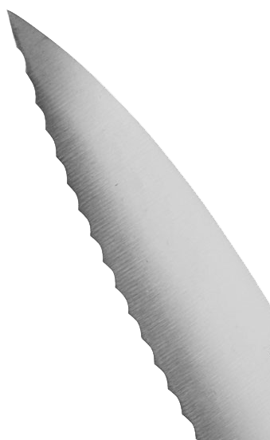

|
Because sharp enough ... usually is not |
Serrated Blade Knives

Serrated knife edge
Dr. Vadim Kraichuk of KnifeGrinders put together this video. I won't try to describe this better.
Dr. Larrin Thomas noted in his book, Knife Engineering: Steel, Heat Treating, and Geometry (2025),
A serrated edge operates like an extremely coarse “plain” edge. ... The plain edge starts out with significantly better cutting ability but loses it much more rapidly than the serrated edge. Therefore, if a reducion in cutting ability is acceptable, serrated edges can last a long time for slicing.
I am convinced that whomever invented serrated blade knives was a sad and evil person.
Rich Colvin
Other knives also have serrated blades, and similar approaches can be used.